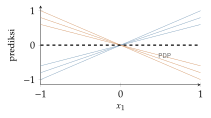

Bab 17
Membuka Kotak Hitam: AI dan Visualisasi
Kuliah AI and visualization saya ikuti pada musim dingin 2025/26, diberikan oleh kelompok Visual Data Science di Linz. Kuliahnya bertumpu pada satu rumus yang muncul sejak pertemuan pertama: AI ditambah visualisasi ditambah manusia sama dengan explainable AI. Penjelasan bukan sesuatu yang dikeluarkan mesin begitu saja. Ia harus dirancang untuk seseorang, dan visualisasi adalah salah satu alat terbaik untuk menyampaikannya.
Model yang paling akurat sering yang paling sulit dipahami. Untuk menyarankan film, itu tidak masalah. Untuk menolak kredit, mendiagnosis penyakit, atau menyetujui desain sebuah reaktor, kita perlu tahu alasan di balik keputusan. Bab ini membahas dua arah hubungan antara AI dan visualisasi: visualisasi untuk memahami AI, dan AI untuk membuat visualisasi.
Siapa yang butuh penjelasan, dan untuk apa
Penjelasan yang dibutuhkan pengembang model berbeda dari yang dibutuhkan dokter, regulator, atau orang yang permohonan kreditnya ditolak. Pengembang ingin menemukan bug dan bias. Pengguna ahli ingin tahu kapan model bisa dipercaya. Orang yang terdampak ingin tahu apa yang harus diubah agar keputusannya berbeda. Kuliah menyusun teknik-teknik XAI menurut pertanyaan pengguna: mengapa prediksi ini, mengapa bukan yang lain, bagaimana kalau input diubah, dan contoh mana yang mirip.
Ada juga pertukaran yang sering digambarkan antara kinerja dan keterjelasan. Regresi linear dan pohon keputusan kecil mudah dibaca, jaringan dalam tidak. Rudin (2019) berpendapat bahwa untuk keputusan berisiko tinggi, kita sebaiknya memakai model yang bisa ditafsirkan sejak awal daripada menjelaskan kotak hitam setelah jadi, karena penjelasan sesudahnya bisa saja tidak setia pada apa yang sebenarnya dilakukan model.
Kuliah membedakan dua arah. Vis for ML memakai visualisasi untuk memahami, men-debug, dan membandingkan model. ML for Vis memakai machine learning untuk membantu membuat visualisasi, misalnya merekomendasikan jenis grafik atau menghasilkan dashboard dari permintaan dalam bahasa biasa.
Dasar-dasar visualisasi
Visualisasi bekerja karena sistem visual manusia memproses pola dengan cepat. Tetapi tidak semua saluran visual sama kuatnya. Munzner (2014) menyusun peringkat untuk data kuantitatif: posisi pada sumbu yang sama paling akurat dibaca, disusul panjang, sudut, luas, lalu kecerahan dan saturasi warna. Itulah sebabnya grafik batang biasanya lebih jujur daripada diagram lingkaran, dan mengapa grafik tiga dimensi yang memiringkan sumbu sering menyesatkan. Prinsip Gestalt menjelaskan bagaimana mata mengelompokkan objek: berdekatan, mirip warna atau bentuk, terhubung garis, atau berada di dalam wadah yang sama.
Visualisasi juga bisa bercerita. Cerita yang digerakkan penulis membawa pembaca melalui urutan yang sudah ditentukan, seperti artikel berita. Cerita yang digerakkan pembaca membiarkan orang menjelajah sendiri. Banyak visualisasi terbaik memakai bentuk campuran: dimulai dengan narasi, lalu membuka ruang untuk dijelajahi.
Kuliah memakai visualisasi untuk menjelaskan algoritme. Algoritme pengurutan bisa digambar sebagai garis-garis yang bertukar tempat dari langkah ke langkah. \(k\)-means bisa dianimasikan sebagai pusat yang bergeser. Teorema Bayes bisa dijelaskan dengan kotak berisi seratus orang. Contoh yang dibahas adalah tes penyakit dengan sensitivitas 90 persen, tingkat positif palsu 9 persen, dan prevalensi 1 persen. Dari seribu orang, sepuluh sakit dan sembilan di antaranya terdeteksi, sedangkan dari 990 orang sehat, sekitar 89 mendapat hasil positif palsu. Peluang benar-benar sakit setelah hasil positif hanya \(9/(9+89)\approx9\) persen. Banyak orang, termasuk dokter, menebak jauh lebih tinggi. Gambar seratus kotak kecil membuat hasil ini langsung terasa masuk akal.
Menjelaskan lewat proyeksi
Data berdimensi tinggi, termasuk aktivasi di dalam jaringan saraf, bisa diproyeksikan ke dua dimensi untuk dilihat. PCA (Bab 6) mempertahankan varians global, t-SNE (Maaten dan Hinton 2008) mempertahankan tetangga lokal, dan UMAP (McInnes, Healy, dan Melville 2018) berusaha menjaga keduanya. Kuliah meluangkan waktu khusus untuk salah baca yang umum pada t-SNE: hyperparameter seperti perplexity amat menentukan, ukuran kelompok di peta tidak berarti apa-apa, jarak antar kelompok bisa menipu, noise acak kadang tampak berpola, dan untuk melihat topologi kita mungkin butuh beberapa peta dengan setelan berbeda.
Salah baca itu bisa dipahami dari cara t-SNE bekerja. Untuk setiap titik di ruang asal, t-SNE mengubah jarak ke titik-titik lain menjadi peluang bertetangga \(p_{ij}\) dengan kernel Gauss, yang lebarnya dipilih per titik agar setiap titik punya kira-kira sejumlah tetangga efektif yang sama, yaitu perplexity. Di peta dua dimensi, peluang \(q_{ij}\) dihitung dengan distribusi Student-\(t\) berekor tebal, lalu posisi titik di peta digeser untuk meminimalkan \(\mathrm{KL}(P\|Q)=\sum p_{ij}\log(p_{ij}/q_{ij})\). Karena lebar kernel disesuaikan per titik, kelompok yang rapat dan kelompok yang renggang di ruang asal sama-sama tampil dengan ukuran serupa di peta. Dan karena KL ini menghukum keras tetangga dekat yang dipisahkan, tetapi hampir tidak peduli pada titik jauh yang didekatkan, jarak antar kelompok di peta tidak punya arti yang bisa diandalkan.
Proyeksi juga bisa menunjukkan proses yang berjalan dalam waktu. Kalau setiap keadaan sebuah proses, misalnya setiap langkah algoritme, setiap posisi permainan catur, atau setiap epoch pelatihan jaringan, diproyeksikan sebagai satu titik, lalu titik-titik itu dihubungkan, kita mendapat lintasan. Lintasan pelatihan dua jaringan bisa dibandingkan: apakah keduanya menempuh jalan yang mirip, atau satu berputar-putar sebelum menemukan solusi. Kelompok visualisasi di Linz juga mengembangkan alat seperti ini untuk kimia, sehingga ahli kimia bisa menjelajahi ruang molekul yang dilihat oleh model prediksi mereka.
Menjelaskan dalam ruang input
Sekelompok teknik menjelaskan model dengan melihat bagaimana keluarannya berubah terhadap input. Partial dependence plot menampilkan efek rata-rata satu fitur terhadap prediksi, dengan merata-ratakan atas nilai fitur-fitur lain. Individual conditional expectation menampilkan kurva yang sama untuk setiap contoh secara terpisah, sehingga interaksi antar fitur yang tersembunyi di balik rata-rata menjadi terlihat. Ambil model \(f(x_1,x_2)=x_1x_2\) dengan \(x_2\) bernilai \(+1\) atau \(-1\) sama seringnya. Separuh kurva ICE untuk \(x_1\) naik, separuh lagi turun, dan PDP, rata-ratanya, datar sempurna (Gambar 17.1). Kalau hanya melihat PDP, kita akan menyimpulkan bahwa \(x_1\) tidak berpengaruh sama sekali, padahal ia berpengaruh, hanya arahnya bergantung pada \(x_2\).

LIME (Ribeiro, Singh, dan Guestrin 2016) menjelaskan satu prediksi dengan membangun model sederhana yang hanya berlaku di sekitar contoh itu. Contoh diganggu sedikit demi sedikit, misalnya dengan menyembunyikan potongan-potongan gambar (superpixel), model asli ditanya untuk setiap versi, lalu model linear dilatih untuk meniru jawabannya secara lokal. Secara formal, LIME mencari \[g^*=\operatorname*{arg\,min}_{g\in G}\ \sum_{z}\pi_x(z)\big(f(z)-g(z)\big)^2+\Omega(g),\] dengan \(z\) contoh-contoh yang diganggu, \(\pi_x(z)\) bobot yang makin kecil untuk \(z\) yang makin jauh dari \(x\), dan \(\Omega(g)\) penalti kerumitan, misalnya batas jumlah fitur yang boleh dipakai. Ini regresi linear berbobot dengan regularisasi dari Bab 1. Bobot model linear itu menjadi penjelasan. Kelemahannya juga terlihat dari rumus ini: hasilnya bergantung pada cara mengganggu contoh dan pada lebar \(\pi_x\), sehingga dua setelan yang sama-sama masuk akal bisa memberi penjelasan yang berbeda. Model surrogate global melakukan hal serupa untuk seluruh data, dengan risiko bahwa model sederhana itu tidak cukup setia.
Nilai Shapley berasal dari teori permainan kooperatif. Pertanyaannya: kalau sekelompok pemain bersama menghasilkan keuntungan, berapa bagian yang adil untuk setiap pemain? Jawaban Shapley adalah rata-rata kontribusi marginal pemain itu atas semua urutan kedatangan pemain. Dalam XAI, pemainnya adalah fitur dan keuntungannya adalah prediksi. Ambil contoh dua fitur, A dan B. Tanpa fitur apa pun, prediksi model 0. Dengan A saja 10, dengan B saja 20, dan dengan keduanya 40. Kalau A datang lebih dulu, kontribusinya 10, dan kalau datang setelah B, kontribusinya 20. Rata-ratanya 15. Dengan cara yang sama, B mendapat \((20+30)/2=25\). Jumlah keduanya tepat 40, prediksi penuh. Secara umum, untuk \(n\) fitur dan fungsi nilai \(v(S)\) yang memberi prediksi dengan hanya memakai himpunan fitur \(S\), \[\phi_i=\sum_{S\subseteq\{1,\dots,n\}\setminus\{i\}}\frac{|S|!\,(n-|S|-1)!}{n!}\big(v(S\cup\{i\})-v(S)\big).\] Bobotnya adalah peluang bahwa, dalam urutan kedatangan yang acak, tepat fitur-fitur di \(S\) datang sebelum \(i\): ada \(|S|!\) cara menyusun yang datang lebih dulu, \((n-|S|-1)!\) cara menyusun yang datang belakangan, dari \(n!\) urutan. Nilai Shapley adalah satu-satunya pembagian yang memenuhi empat sifat sekaligus: jumlahnya sama dengan prediksi penuh dikurangi prediksi kosong, fitur yang berperan identik mendapat bagian sama, fitur yang tidak pernah berpengaruh mendapat nol, dan untuk jumlah dua model, nilainya juga dijumlahkan. SHAP (Lundberg dan Lee 2017) membuat perhitungan ini praktis untuk model dengan banyak fitur, karena jumlah urutan yang mungkin tumbuh secara faktorial. Yang sering terlupa adalah bahwa \(v(S)\) harus didefinisikan: apa artinya model “tanpa” sebuah fitur? Biasanya fitur yang hilang diganti nilai dari data latar, dan kalau fitur-fitur saling berkorelasi, penggantian itu bisa menciptakan contoh yang tidak realistis, seperti orang berusia sepuluh tahun dengan gelar doktor.
Pertanyaan “bagaimana kalau” dijawab oleh counterfactual explanation (Wachter, Mittelstadt, dan Russell 2017): cari contoh \(x'\) yang sedekat mungkin dengan \(x\) tetapi menghasilkan keputusan yang diinginkan, misalnya dengan meminimalkan \(\lambda\big(f(x')-y'\big)^2+d(x,x')\). Jawabannya berbentuk kalimat yang langsung bisa dipakai: “kredit Anda akan disetujui kalau pendapatan Anda 400 euro lebih tinggi per bulan”. Penjelasan seperti ini tidak membuka isi model sama sekali, sehingga cocok untuk hak atas penjelasan dalam GDPR (Bab 35). Tetapi ia harus dibatasi pada perubahan yang mungkin: menyarankan seseorang menjadi lebih muda bukan penjelasan yang berguna.
Menjelaskan lewat gradien
Untuk jaringan saraf, gradien keluaran terhadap input memberi peta kepekaan langsung: piksel mana yang paling mengubah skor kelas kalau digeser sedikit. Saliency map vanila (Simonyan, Vedaldi, dan Zisserman 2013) menampilkan besar gradien ini. Hasilnya sering berbintik dan berisik. Integrated gradients (Sundararajan, Taly, dan Yan 2017) menjumlahkan gradien sepanjang jalur dari gambar acuan, misalnya gambar hitam, ke gambar asli, dan memenuhi sifat bahwa jumlah atribusinya sama dengan selisih keluaran: \[\mathrm{IG}_i(x)=(x_i-x_i')\int_0^1\frac{\partial f}{\partial x_i}\big(x'+\alpha(x-x')\big)\,\mathrm{d}\alpha .\] Contoh kecil memperlihatkan mengapa sifat ini penting. Untuk \(f(x_1,x_2)=x_1x_2\) di \(x=(2,3)\) dengan acuan nol, di sepanjang jalur \(\partial f/\partial x_1=3\alpha\), sehingga \(\mathrm{IG}_1=2\int_0^13\alpha\,\mathrm{d}\alpha=3\), dan dengan cara yang sama \(\mathrm{IG}_2=3\). Jumlahnya 6, tepat \(f(x)-f(0)\). Atribusi gradien kali input, yang memakai gradien di titik akhir saja, memberi \(3\cdot2=6\) dan \(2\cdot3=6\), dengan jumlah 12, dua kali lipat dari keluaran yang ingin dijelaskan. Grad-CAM (Selvaraju dkk. 2016) memakai gradien terhadap peta fitur lapisan konvolusi terakhir untuk menimbang peta-peta itu. Bobot peta ke-\(k\) adalah rata-rata gradien skor kelas \(y^c\) terhadap peta itu, \(\alpha_k=\tfrac1Z\sum_{i,j}\partial y^c/\partial A^k_{ij}\), dan peta panasnya \(\mathrm{ReLU}\big(\sum_k\alpha_kA^k\big)\), sehingga menghasilkan peta panas kasar yang menunjukkan daerah gambar yang dipakai model. Layer-wise relevance propagation (Bach dkk. 2015) membagi skor keluaran mundur ke input lapisan demi lapisan dengan aturan kekekalan relevansi.
Kuliah memakai contoh dari sebuah studi klasifikasi jamur. Peta Grad-CAM kadang menunjukkan bahwa model melihat bagian yang memang penting secara biologis, seperti tudung dan bilah, tetapi kadang juga latar belakang, misalnya rumput atau tangan yang memegang jamur. Peta seperti ini tidak membuktikan bahwa model benar, tetapi amat berguna untuk menemukan jalan pintas yang tidak diinginkan.
Sebaliknya, peta yang tampak masuk akal juga belum tentu setia pada model. Adebayo dkk. (2018) mengusulkan uji kewarasan yang sederhana: acak bobot jaringan lapisan demi lapisan, atau latih ulang dengan label acak, lalu lihat apakah peta penjelasannya ikut berubah. Beberapa metode populer menghasilkan peta yang hampir sama untuk jaringan terlatih dan jaringan acak. Metode seperti itu lebih banyak memperlihatkan tepi-tepi gambar daripada apa yang dipelajari model, seperti detektor tepi yang kebetulan rapi. Pelajarannya berlaku untuk semua XAI: penjelasan juga harus diuji, bukan hanya dinikmati.
Menjelaskan lewat contoh dan konsep
Manusia sering menjelaskan dengan contoh: “ini mirip kasus yang kemarin”. Model pun bisa menjelaskan prediksinya dengan menunjukkan contoh data latih yang paling mirip di ruang fiturnya. Prototype adalah contoh yang mewakili sebuah kelompok, dan criticism adalah contoh yang tidak terwakili dengan baik oleh prototype mana pun. Keduanya bersama memberi gambaran lebih jujur tentang data.
Penjelasan berbasis konsep bertanya apakah sebuah konsep yang bermakna bagi manusia, misalnya “bergaris” atau “berlatar salju”, tersimpan di dalam jaringan. Network dissection mencocokkan unit-unit di dalam jaringan dengan konsep yang dianotasi. TCAV (Kim dkk. 2017) mempelajari arah di ruang aktivasi yang mewakili sebuah konsep dari contoh-contohnya, lalu mengukur seberapa peka prediksi sebuah kelas terhadap arah itu. Jenis temuan yang dicari mirip contoh terkenal dari Ribeiro, Singh, dan Guestrin (2016), di mana penjelasan LIME mengungkap bahwa sebuah pengklasifikasi serigala dan anjing husky sebenarnya terutama melihat salju di latar belakang.
Visualisasi di era AI generatif
Pertemuan terakhir membahas arah sebaliknya: AI yang membuat visualisasi. Model bahasa bisa menulis kode grafik dari permintaan dalam bahasa biasa, menyusun dashboard, atau membuat penjelasan bagi pengguna baru. Kuliah menyoroti risikonya. Gambar yang dihasilkan bisa tampak meyakinkan tetapi salah secara data. Model membuat asumsi tentang maksud pengguna yang tidak pernah diucapkan. Dan jawabannya bergantung pada gambaran yang dibentuk model tentang siapa penggunanya. Kuliah mengusulkan antarmuka yang membuat asumsi-asumsi itu terlihat dan bisa dikoreksi pengguna.
Di luar kelas
Keterjelasan penting di setiap bidang yang dibahas buku ini, dengan alasan yang berbeda-beda. Dalam kedokteran, peta Grad-CAM pada citra rontgen bisa mengungkap model yang melihat penanda rumah sakit di sudut gambar alih-alih paru-paru. Dalam penemuan obat, atribusi pada atom-atom molekul membantu ahli kimia memutuskan bagian mana yang perlu diubah. Dalam pemrosesan sinyal dan sistem tertanam, kita perlu tahu sensor mana yang paling menentukan sebuah keputusan. Dalam simulasi, keterjelasan bisa diambil sejauh-jauhnya: metode seperti SINDy (Bab 31) tidak menjelaskan model kotak hitam, melainkan menghasilkan persamaan yang bisa dibaca langsung. Itu barangkali bentuk penjelasan yang paling disukai Rudin (2019).
Perkembangan riset
Untuk model bahasa besar, riset keterjelasan bergeser ke mechanistic interpretability: mencoba membaca mekanisme di dalam jaringan, bukan hanya atribusi pada input. Masalah utamanya adalah polysemanticity. Satu neuron sering aktif untuk banyak konsep yang tidak berhubungan, karena jaringan diduga menyimpan lebih banyak fitur daripada jumlah neuronnya, sebagai arah-arah yang saling bertumpuk di ruang aktivasi (superposition). Cunningham dkk. (2023) melatih sparse autoencoder untuk merekonstruksi aktivasi internal model bahasa dari kombinasi jarang arah-arah yang jauh lebih banyak dari jumlah neuron. Fitur yang ditemukan lebih monosemantik, satu fitur untuk satu konsep, dan bisa dipakai untuk menunjuk fitur mana yang secara kausal bertanggung jawab atas sebuah perilaku. Gagasannya adalah analisis faktor jarang dari Bab 6, diterapkan pada aktivasi jaringan.
Arah lain membangun keterjelasan ke dalam arsitektur, sejalan dengan saran Rudin (2019). Concept bottleneck model (Koh dkk. 2020) memaksa jaringan memprediksi dulu konsep-konsep yang bermakna bagi manusia, misalnya “ada taji tulang” pada citra rontgen lutut, lalu memprediksi label akhir hanya dari konsep itu. Dokter bisa melihat konsep mana yang dipercaya model, dan bisa mengoreksinya saat model dipakai. Koreksi seperti itu dilaporkan meningkatkan akurasi secara nyata.
Catatan sumber.
Bab ini mengikuti enam kuliah AI and Visualization beserta labnya: dasar visualisasi, menjelaskan algoritme, proyeksi, teknik penjelasan visual (PDP, ICE, LIME, Shapley, saliency, Grad-CAM, contoh, konsep), dan AI generatif untuk visualisasi. Bacaan pendamping: Molnar (2022) untuk interpretable machine learning dan Munzner (2014) untuk visualisasi.